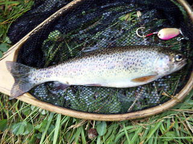

| ２０１１年７月１６日 アメマス | ２０１１年７月２３日 アメマス |
| ２０１１年７月３０日 アメマス ４０ｃｍ (KKC) |
２０１１年７月３０日 オショロコマ |
 |
|
| ２０１１年７月３０日 アメマス | ２０１１年７月３０日 ニジマス |
| ２０１１年８月６日 ニジマス (KKC) |
２０１１年８月１５日 アメマス |
| ２０１１年８月１７日 アメマス | ２０１１年８月２７日 ニジマス ２５センチ |
| ２０１１年８月２７日 ニジマス ４４センチ 知り合いが釣り上げた。 |
２０１１年９月１０日 ニジマス |
| ２０１１年９月１０日 ニジマス | ２０１１年９月１９日 ニジマス |
| ２０１１年９月１９日 ニジマス (KC) |
２０１１年９月１９日 ニジマス (KC) |
| ２０１１年９月１９日 ニジマス ３５センチ (SKC) |
２０１２年７月２０日 ニジマス ２８センチ (SB) |
| ２０１２年７月２９日 アメマス ２８センチ (KKC) |
２０１２年７月２９日 アメマス ３１センチ (FUR) |
|  | |
| ２０１２年９月２日 ニジマス ３４センチ (SKC) |
２０１２年９月２日 ニジマス ２３センチ (SKC) |
| ２０１２年９月８日 鮭 ７０センチ リリース (ONB) |
２０１２年９月１６日 山女 １９センチ （AKN） |
| ２０１２年９月１６日 ニジマス ２４センチ （AKN） |
２０１２年９月１７日 アメマス ２９センチ （ONB） |
| ２０１２年９月１７日 アメマス ３１センチ （ONB） |
２０１２年９月１７日 アメマス ４５センチ メス （筋子） （ONB） |
| ２０１２年９月２２日 アメマス ３０センチ （ONB） |
２０１２年９月２９日 サクラマス ５１センチ リリース （ONB） |
| ２０１２年１０月２０日 ニジマス ２７センチ (SKC) |
２０１２年１０月２０日 ニジマス ３０センチ (SKC) |